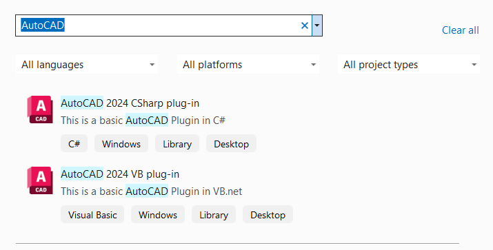
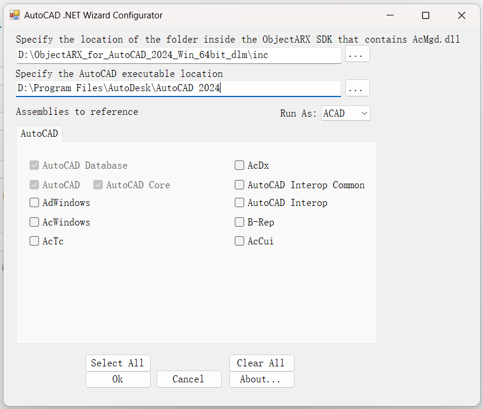
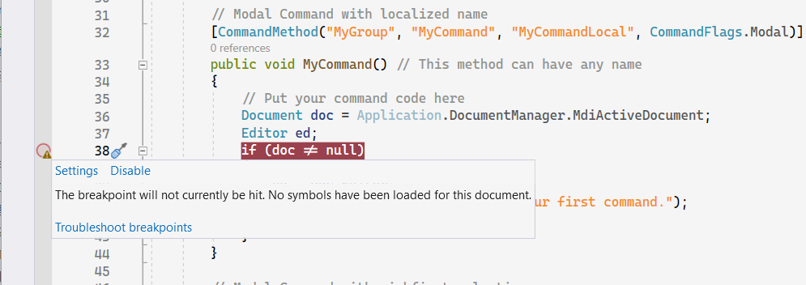
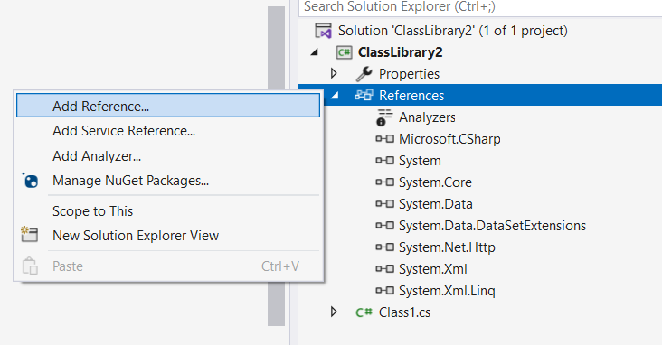
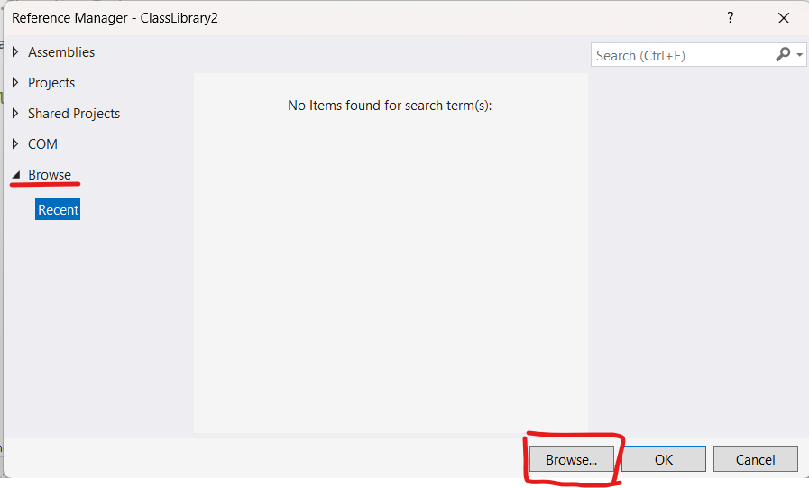
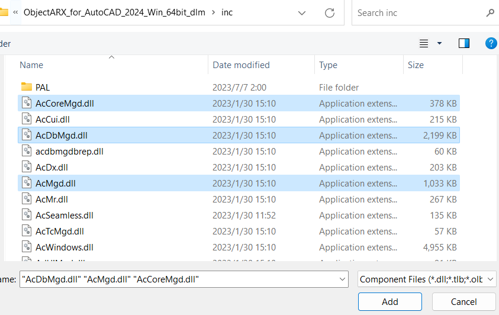
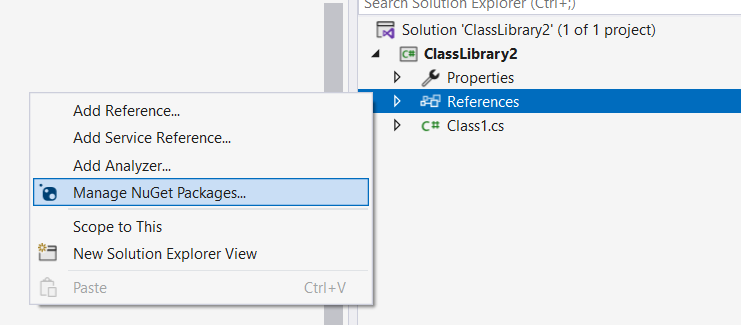
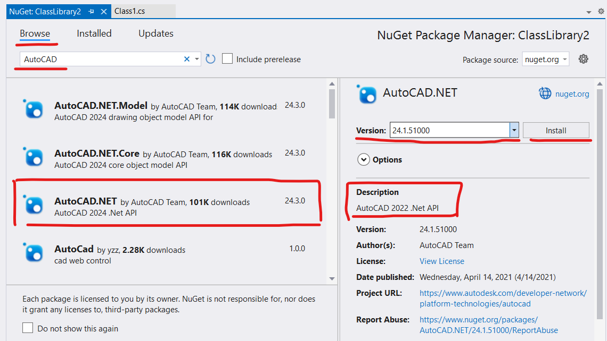
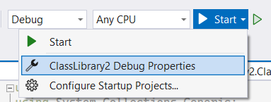
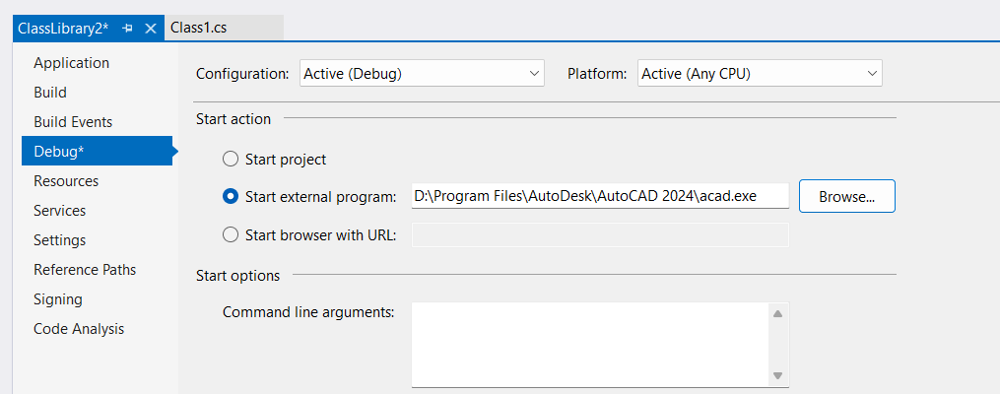

基于ObjectARX .NET的AutoCAD二次开发：项目配置
ObjectARX 是 AutoCAD 的开发环境，提供面向对象的 C++ 以及 .NET 编程接口。本文将介绍两种配置 Visual Studio 项目的方法，包括不使用 Wizard 的方法。
🔗开发目标
在基于 ObjectARX .NET API的 AutoCAD 二次开发中，最终需要得到的是一个（或若干个） .dll 文件。在 AutoCAD 中使用 NETLOAD 指令加载这个 .dll 文件，就可以导入包含在其中的 指令，从而扩展 AutoCAD 的功能。这些指令具体做什么工作都是自己编写代码实现的，名字也是自己取的，使用的时候和执行 AutoCAD 的内置指令没有区别。
如果你有一定的 C# 语言的程序开发基础，那么你应该已经联想到你需要一个类型为 类库(class library) 的项目，因为它的编译产物正是 .dll 文件。下文中我会介绍两种创建这个项目的方法：一种是基于 AutoCAD DotNet Wizard 的向导式创建方法，这个向导会询问你 ObjectARX 与 AutoCAD 的安装位置，自动完成项目的依赖引用与调试设置；另一种是创建普通的类库项目，然后通过 Nuget 或手动编辑的方式完成依赖引用的设置。
🔗前期准备
📖安装 Visual Studio
网上教程很多，这里不再介绍，注意你只需要在 Visual Studio Installer 里勾选 .NET 桌面开发 即可。
Visual Studio Installer 从 Visual Studio 2019 版本开始有（如果我没记错的话），更旧的版本应该是默认安装 .NET 桌面开发的。
我个人是推荐采用最新版本的 Visual Studio。虽然这可能会导致你无法使用 AutoCAD DotNet Wizard，因为它同时要求了 Visual Studio 与 AutoCAD 的版本。比如 AutoCAD 2023 DotNet Wizard，要求 AutoCAD 2023 以及 Visual Studio 2019。如果你使用的是早期的 AutoCAD 版本，可能会同时要求你使用非常古老的 Visual Studio，这非常的不推荐。
下文会介绍不使用 AutoCAD DotNet Wizard 的方法，采用此方法可以不考虑 Visual Studio 的版本，请直接安装最新版本，以获得最佳的开发体验。
📖下载并解压 ObjectARX
请根据你的操作系统（Windows Or Mac）以及电脑上的 AutoCAD 版本，在这个链接 https://www.autodesk.com/developer-network/platform-technologies/autocad/objectarx-download 里下载 ObjectARX。
这个页面在搜索引擎中可能搜索不到，因为它是填写了邮箱之后跳转而来的。
ObjectARX 没有安装过程，下载好之后运行会提示需要解压，解压得到的目录就是 ObjectARX 本身，这个目录的名字类似于： ObjectARX_for_AutoCAD_2024_Win_64bit_dlm。
📖下载并安装 AutoCAD DotNet Wizard（可选）
Wizard 可以在链接 https://www.autodesk.com/developer-network/platform-technologies/autocad 的最下面，Tools 一栏里找到。（请下载 AutoCAD DotNet Wizard 而不是 AutoCAD Wizard）
上面提到 AutoCAD DotNet Wizard 同时要求了 Visual Studio 与 AutoCAD 的版本，但其实安装程序只会检测你电脑上所安装的 Visual Studio 是否满足版本要求，因此可以只根据 Visual Studio 的版本来选择 Wizard 的版本。比如 Wizard 2024 要求 Visual Studio 2022，Wizard 2023 要求 Visual Studio 2019（有一个对应关系，可以逐个版本下载，看看哪个能装上）。
🔗使用 Wizard 创建项目
打开 Visual Studio 创建项目的时候能看到 AutoCAD CSharp plug-in，按照步骤创建即可。

如下图所示，向导会询问两个路径，第一个填 ObjectARX 的 inc 目录，比如我填写的是： D:\ObjectARX_for_AutoCAD_2024_Win_64bit_dlm\inc。第二个路径填写的是 AutoCAD 的安装路径（包含 acad.exe）。

创建好项目后直接开始调试，调试器会启动 AutoCAD，此时注意到 AutoCAD 本身也处于调试模式。在加载插件之前，设置的断点会提示无法命中，如下图。

这是因为插件还没有被 AutoCAD 载入，在 AutoCAD 中新建一个图纸，然后执行 NETLOAD 命令，选择编译出来的 .dll 文件，就会注意到断点可以命中了。执行 MyCommand 指令，断点成功命中。
🔗手动配置项目
首先创建一个 Class Library (.NET Framework) 项目，注意必须是带有 .NET Framework 的才可以。

📖设置依赖引用
方法 1：从 ObjectARX 的文件进行设置
如下图所示，右键项目中的 References（引用），选择 Add Reference（添加引用）。
由于我的 Visual Studio 是英文，菜单选项的中文译名依赖回忆，因此可能不准确。

展开 Browse（浏览）页面，然后点击 Browse（浏览）按钮进行选择。

导航到 ObjectARX 的 inc 目录，选择 “AcMgd.dll”、”AcCoreMgd.dll” 与 “AcDbMgd.dll” 三个 .dll 文件。

至此，依赖引用设置完成。
方法 2: 使用 NuGet
如下图所示，右键项目中的 References（引用），选择 Manage NuGet Pacakages（管理 NuGet 包）。

在 Browse 页面中，搜索关键词 “AutoCAD”，在搜索结果中选择 “AutoCAD.NET”。注意右侧可以选择版本，请根据你的 AutoCAD 版本进行选择。比如图中所选择的版本 “24.1.51000”，从下方的 Description 中可以发现它对应的是 AutoCAD 2022。

选择正确的版本后，点击 Install，完成依赖配置。
📖设置调试方法
如图，点击 调试按钮 右边的 倒三角按钮 展开菜单，选择菜单中的 Debug Properties (调试属性)。

如图，将 Start action 修改为 Start external program（启动外部程序），路径填写为 AutoCAD 安装目录下的 acad.exe 的路径。

至此，调试方法设置完毕。
📖创建基本代码
这里的代码来自 Wizard 生成的项目，去掉了大部分注释（但其实那些注释还挺有用的，有助于了解这些代码在做什么）并略作修改。
创建一个 .cs 文件，命名为 “MyPlugin.cs”，内容如下：
1 | using Autodesk.AutoCAD.ApplicationServices; |
注意把代码中的 “ClassLibrary” 修改为你自己项目的命名空间
再创建另一个 .cs 文件，命名为 MyCommand.cs”，内容如下：
1 | using Autodesk.AutoCAD.ApplicationServices; |
至此，一个带有 “MyCommand” 命令的 AutoCAD 插件项目配置完毕。
🔗最后
受限于写作经验，本文可能仍有不足，恳请批评指正。如果想转载本文，请在评论区或邮件联系我。
基于ObjectARX .NET的AutoCAD二次开发：项目配置
https://uint128.com/2023/07/11/基于ObjectARX-NET的AutoCAD二次开发快速入门/